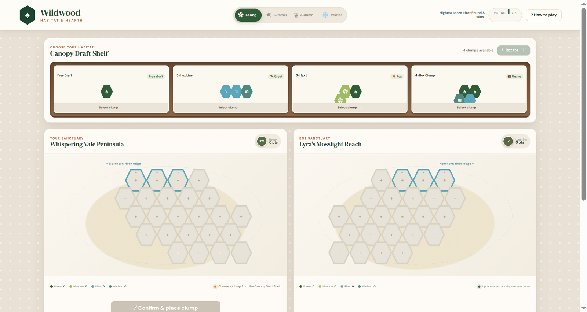
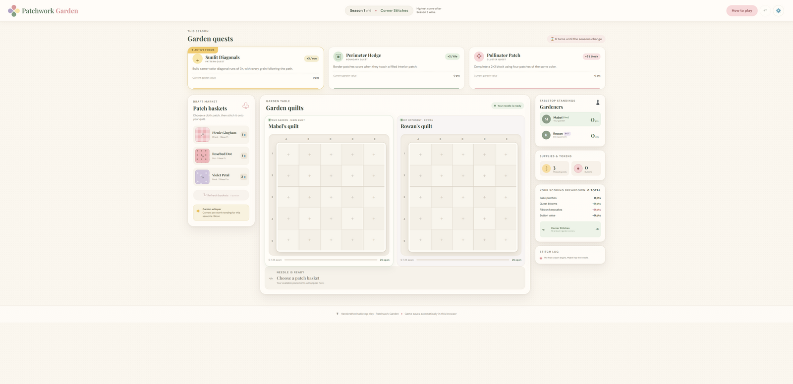
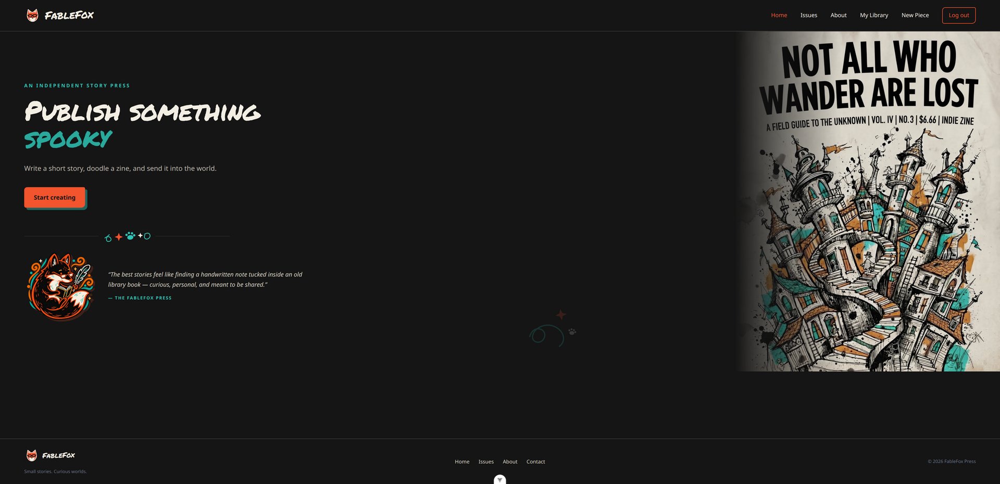
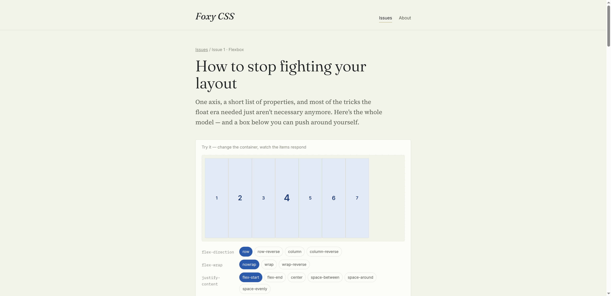
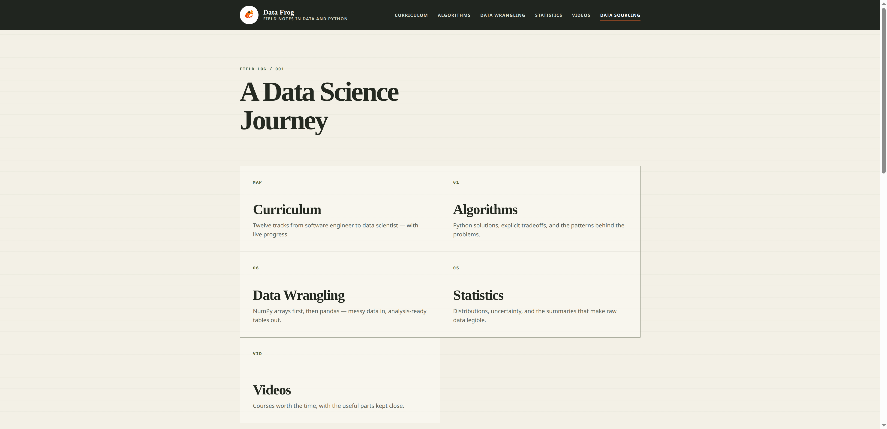
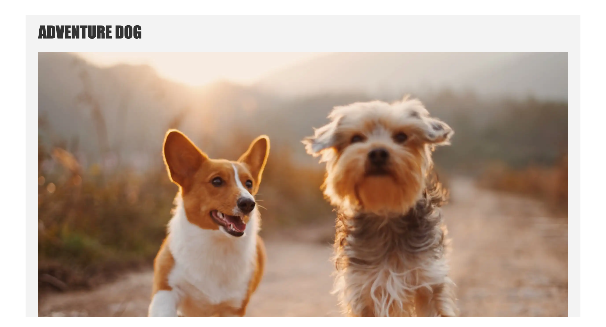

Wildwood
A hex-tile habitat drafting game across four seasons.

A hex-tile habitat drafting game across four seasons.

A quilt-pattern drafting game with seasonal quests.

An independent story press for writing and publishing short fiction.

A CSS magazine pairing practical articles with interactive demos.

My writing and notes while learning data science.

Dog blog with markdown-powered articles. Just for fun.
I focus on Python and JavaScript as my main programming languages.
I’m learning more about machine learning through online courses and documenting the work in Data Frog.
I work through LeetCode problems to keep building my algorithmic problem-solving skills.
Feb 2022—present
Jan 2021—present
Yellow Umbrella Creators
My personal project company.
Mar 2020—Jan 2021
SharpSpring / Constant Contact
Worked on tools that automate customer communication and marketing.
Sep 2017—Feb 2020
Built software at a company specializing in thermal imaging and sensing technologies.